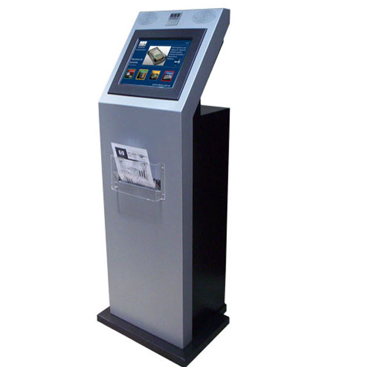
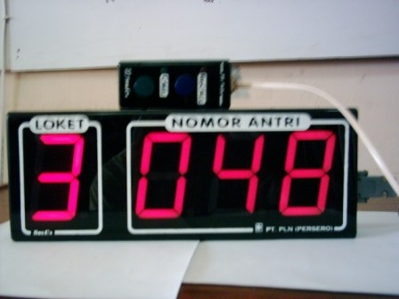
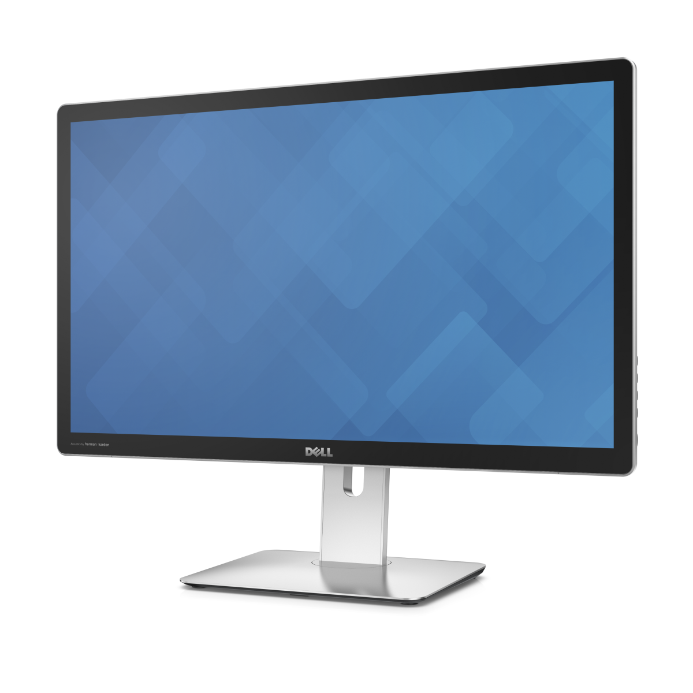

Sistem Antrian MultiMedia (Software & Hardware)
Sistem Antrian Multimedia akan banyak membantu untuk menciptakan budaya antri serta akan menambah kenyamanan pelayanan anda karena tanpa harus berdiri lama berderetan. Kerja operator loket seperti di bank, ataupun instansi lainnya yang membutuhkan pelayanan antrian akan sangat terbantu hingga tercipta efisiensi tenaga dan waktu karena hanya menekan tombol panggil secara otomatis nomor pengantri akan disebutkan oleh voice program yang disambungkan pada pengeras suara.
Sofware Antrian MultiMedia terbagi menjadi 2 bagian yaitu software yang berjalan di perangkat server dan client. Software server digunakan untuk mengendalikan sistem antrian secara keseluruhan, Dilengkapi database manajemen antrian dan Laporan pelayanan pelanggan. Sedangkan software client digunakan sebagai pengganti tombol panggil dengan pilihan menu yang lengkap.
CV. Garnadi Komputindo menyediakan hardware pendukung yang berkualitas dengan harga yang kompetitif. Daftar hardware dapat dilihat pada table dibawah ini.
Keunggulan Sistem
Sistem antrian ini merupakan aplikasi multimedia system menggunakan software komputer dilengkapi dengan monitor LED TV yang berfungsi sebagai master display dan dapat memuat no antri, informasi kurs, iklan layanan, running text dan tv. Dengan kelebihan sebagai berikut :
- Antrian terkoneksi jaringan LAN maupun WiFi
- Mesin antrian memiliki 2 layanan yaitu teller dan customer service yang dimuat dalam main display dan ditampilkan pada TV LED Monitor 32/40 inch
- Running text dapat di update sesuai keinginan dan bergerak dari kanan ke kiri
- Antrian akan kembali ke angka 1 jika sudah melewati jam 12 malam
- Jam dan tanggal dapat diupdate mengikuti jam dan tanggal komputer mini server
- Jika terjadi mati listrik dan hidup kembali, nomor antrean masih tetap dilanjutkan sampai jam 12 malam
- Tampilan TV LED Monitor dapat disesuaikan dengan keinginan klien
Komponen Sistem Antrian MultiMedia
| Item | Keterangan |
|---|---|
Tiket Dispenser
 Rp. 4000.000,00
Rp. 4000.000,00
|
berfungsi sebagai mesin pencetak nomor antrian |
| Kiosk  Rp. 4000.000,00 | Kiosk adalah sebuah alat/media yang digunakan sebagai media untuk menyampaikan informasi, transaksi, promosi, internet, tiketing, juke box, dan lain sebagainya. Umumnya berbentuk seperti mesin ATM ( Anjungan Tunai Mandiri), para pengguna yang hendak mencari informasi dapat menyentuhkan jarinya pada layarnya tersebut atau menggunakan mouse untuk melihat informasi yang ada didalamnya. |
| Display Loket  Rp. 700.000,00 | berfungsi menampilkan informasi antrian berupa nomor dan loket |
| Display Utama  Rp. 5000.000,00 | Setiap nomor antrian yang dipanggil akan ditampilkan di Display Utama (Display Besar) yang menampilkan nomor urut antri dan nomor loket yang dituju. Selain itu, nomor urut antri akan ditampilkan di display loket (Display didepan petuga loket). Display loket ini juga menampilkan sisa antrian yang akan dilayani. |
| Speaker Rp. 4000.000,00 | berfungsi sebagai pengeras suara |
| PC-Mini Server Rp. 4000.000,00 | berfungsi sebagai perangkat yang mengendalikan sistem antrian secara keseluruhan. |